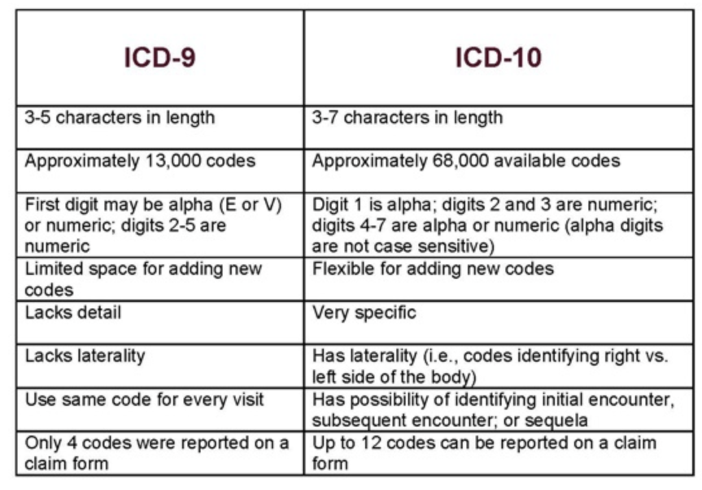
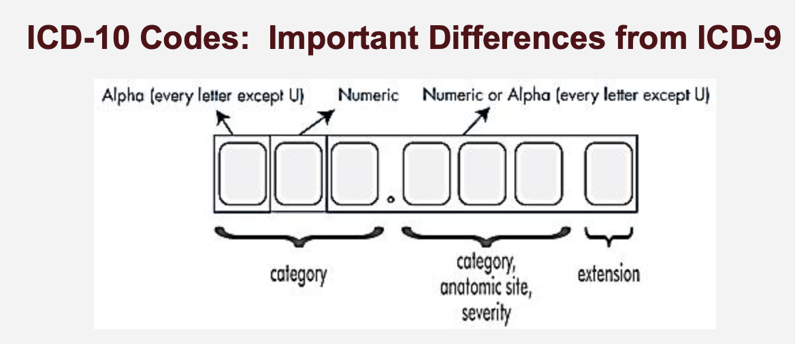

Measuring Health and Disease in Populations II
Chapter 3
Eric Delmelle
Feb 19 - Feb 24, 2025
Chapter Overview
- Health Indicators and Indices: What are their characteristics and why are they important?
- Sources and Evaluation of Health Data: Primary, secondary data, passive and active collection.
- Disease Definition and Classification: How do we classify diseases? (ICD9, ICD10-codes)
- Diagnostic Tests and Disease Surveillance: Is a test accurate? What about specificty and sensitivity? True Positive or False Negative?
1 Health Indicators and Indices
- Health Indicators: Directly measurable variables reflecting a population’s health such as infant mortality rate and life expectancy.
- Health Indices: Composite measures combining multiple indicators to give an overview of health status, like the Human Development Index.
- See Box 3.1 and Box 3.3 for more details.
Evaluating Health Indicators
- How are health indicators used to monitor and assess population health, informing public health decisions and policy-making?
Essential Qualities
- Reliability/Reproducibility: Consistent results across studies and time.
- Validity: Accurately measures what it is intended to measure.
- Sensitivity: Detects changes or differences that are meaningful.
Practical Qualities
- Acceptability: Acceptable to those who are assessed by the indicator.
- Feasibility: Can be realistically collected and sustained.
- Universality: Applicable across different settings and populations.
2 Sources and quality of health data
- See Table 3.1 -sources of data to compilate indicators.
- Health data sources are crucial for compiling health indicators.
- Data can originate from individuals, healthcare providers, or be generated through health surveys and administrative databases.
Active or passive?
- Active Data Sources: Require efforts to solicit and collect information, e.g., health surveys.
- Passive Data Sources: Routinely submitted by other entities, e.g., vital statistics.
Primary and Secondary Data Sources
Primary Data Sources: Specifically collected for the purpose of health monitoring (e.g. disease registries and some health surveys).
- Electronic Health Records (EHR): Detailed, real-time, patient-centered records.
- Disease Registries: Used to estimate disease incidence and prevalence, like cancer registries.
Secondary Data Sources: Originally designed for other purposes but also used in health monitoring (e.g.administrative databases for Medicare and Medicaid).
Health Information System (HIS)
An organized set of activities whose purpose is to gather, maintain, and provide health-related information to improve health outcomes.
Components:
- Disease registries
- Utilization databases
- National health surveys
Disease Registries and Notifiable Diseases
- Disease Registries
- Important for estimating disease incidence and prevalence.
- Cover various conditions from cancer to communicable diseases.
- Notifiable Diseases
- Diseases that must be reported to national health authorities.
- Managed by systems like the CDC’s National Notifiable Diseases Surveillance System.
Utilization of Health Data
- Measuring Health Service Utilization
- Utilization data from Medicare, Medicaid, and health maintenance organizations provide insights into health service use.
- Health Surveys
- Gather data on health behaviors, practices, and perceptions.
- Vary by mode of interview and can be influenced by respondents’ perceptions and recall accuracy.
- See Table 3.2 for pros and cons of survey type
- Cross-section (versus longitudinal)
- Likert scale!
- Self-rated survey
- Surprisingly good (dynamic)
- QOL - see the one for Charlotte, NC
Linking health data
Enhanced Insights: Linking different data sources can provide a more comprehensive view of health outcomes.
Examples of Linked Data: Combining EHRs with national health surveys or insurance claim data.
Data Challenges
- Data Integrity and Privacy: Managing the accuracy and confidentiality of linked data is paramount.
- HIPAA!
- List of HIPAA identifiers
- Analytical Complexity: The use of linked data often requires advanced statistical techniques to manage biases and variability.
- Data Integrity and Privacy: Managing the accuracy and confidentiality of linked data is paramount.
3 Summary measures of population health
Integrating Mortality and Morbidity
- Health indices like DFLE, DALE, DALY, HALE, QALY, and HLY combine measures of mortality with morbidity or disability into a single comprehensive figure.
- These measures differ in how they account for morbidity:
- Activities of daily living
- Self-rated health
- Activity limitations (institutional and non-institutional)
Quality-Adjusted Life Years (QALY)
Definition: A measure that combines the length of life with the quality of life in a single index number.
Calculation: Each year in perfect health is counted as one QALY, while years lived with illness or disability are adjusted according to the severity of the health condition.
Disability-Adjusted Life Years (DALY)
- Definition of DALY: A measure that combines mortality (Years of Life Lost, YLL) and morbidity (Years Lived with Disability, YLD) into a single metric.
- Why DALY Matters: Helps policymakers understand the burden of disease and prioritize interventions effectively.
- Components of DALY:
- YLL (Years of Life Lost): Premature death due to specific causes.
- YLD (Years Lived with Disability): The impact of non-fatal health conditions on quality of life.
DALY: let’s dive in (1)
- Mortality Contribution (YLL):
- Leading causes of premature death: cardiovascular disease, cancer, infectious diseases.
- How reductions in mortality affect overall DALY burden.
- Morbidity Contribution (YLD):
- Chronic diseases like diabetes, mental health disorders, and musculoskeletal conditions.
- The role of disability weight in calculating burden.
DALY: let’s dive in (2)
- Comparing YLL and YLD:
- Some diseases cause high YLL (e.g., heart disease), while others contribute more to YLD (e.g., mental disorders, arthritis).
- Policy implications: balancing treatment for high-mortality vs. high-disability conditions.
- Intervention Strategies:
- Preventative measures to reduce YLL (e.g., vaccinations, tobacco control policies).
- Managing chronic conditions to reduce YLD (e.g., rehabilitation programs, mental health support).
DALY: let’s dive in (3)
- Global and Local Comparisons:
- How DALY burden varies by income level, access to healthcare, and social determinants.
DALY: let’s dive in (4)
- Note on the blackboard, example of flu in a university population
DALY: takeaways
- DALY as a Critical Metric: Essential for public health planning and resource allocation.
- Balancing Mortality & Morbidity Interventions: Addressing both premature death and quality of life impairments.
- Health Equity Considerations: Ensuring interventions reach vulnerable populations.
- Data-Driven Public Health Strategies: Using DALY to guide policy decisions and optimize healthcare spending.
4 Understanding ICD-9 and ICD-10 Codes
- What is ICD?
- The International Classification of Diseases (ICD) is a standardized system for classifying diseases, conditions, and procedures.
- Maintained by the World Health Organization (WHO), it is used for healthcare administration, epidemiology, and research.
Transitioning from ICD9 to ICD10
- Transition from ICD-9 to ICD-10:
- ICD-9 had ~13,000 codes, while ICD-10 expanded to ~68,000 codes.
- Greater specificity and accuracy, especially in classifying complex diseases.
- Improved tracking of public health trends and emerging diseases.
- Key Differences Between ICD-9 and ICD-10:
- Specificity: ICD-10 codes provide detailed descriptions, including laterality (left vs. right).
- Combination Codes: ICD-10 combines multiple conditions into a single code (e.g., diabetes with kidney disease).
- Expanded Code Structure: ICD-10 uses alphanumeric codes (A00-Z99) compared to the numeric structure of ICD-9.
Examples of ICD9 and ICD10 codes (1)
Examples of ICD9 and ICD10 codes (2)
Why are these codes important?
Disease Monitoring: ICD codes allow epidemiologists to track disease outbreaks (e.g., COVID-19 had its own ICD-10 codes: U07.1 for confirmed cases).
Healthcare Reimbursement: Ensures accurate billing and insurance claims.
Policy and Research: Facilitates international comparisons of health data.
In-class exercise
Let’s look at this patient. The principal diagnosis (ICD9 code is V3000; look it up)
These are secondary diagnoses - look them up - 76502, 77181, 7707, 77212, 77081, 7470, 7455, 77182, 2760, 76522, 7742, 769, 04110, 7793, 6910, 75432, 4019, 0416, 0413, 9999, 2768.
What can we tell about this patient?
5 Sensitivity and Specificity
- Accurately diagnosing and classifying diseases is critical for effective treatment and disease tracking.
- Errors in classification—whether due to poor coding, faulty diagnostic tests, or reporting mistakes—can significantly impact health outcomes and policy decisions.
Sensitivity: Avoiding False Negatives
- Sensitivity measures how well a test identifies people who actually have a disease.
- A highly sensitive test minimizes false negatives, meaning fewer sick people go undiagnosed.
- If a test has low sensitivity, it will fail to detect many cases, allowing diseases to spread unnoticed.
Example: COVID-19 Testing Sensitivity Issues
- Early PCR tests for COVID-19 had sensitivity rates of 70-80%.
- Up to 30% of infected individuals received false-negative results.
- False negatives led to infected individuals unknowingly spreading the virus, worsening the pandemic.
Specificity: Avoiding False Positives
- Specificity measures how well a test excludes people who do not have the disease.
- A highly specific test minimizes false positives, meaning fewer healthy people are mistakenly diagnosed as sick.
- If a test has low specificity, people might receive unnecessary treatments for diseases they don’t actually have.
Example: False Positives in Cancer Diagnosis
- Low specificity cancer screenings sometimes identify benign tumors as malignant.
- This leads to unnecessary biopsies and emotional distress.
- False positives in COVID-19 antibody tests led some people to believe they were immune when they had never actually been infected.
Why Sensitivity and Specificity Matter
- False negatives can delay treatment and increase transmission of infectious diseases.
- False positives can lead to unnecessary medical interventions and public panic.
- Balancing both sensitivity and specificity is crucial in public health decisions.
In-class exercise
Diagnostic Test
- Sensitivity: 75% (correctly detects 75% of sick students, 25% false negatives).
- Specificity: 90% (correctly identifies 90% of healthy students, 10% false positives).

Distribute Test Results
75% of sick students get a Positive test = 6
25% of sick students get a Negative test = 2
90% of healthy students get a Negative test.
10% of healthy students get a Positive test.
Each student announces their test result (“I tested positive” or “I tested negative”).
Discussion and debrief
- Ask sick students to stand and check if they were correctly diagnosed.
- Ask healthy students who tested positive how they feel about misdiagnosis.
- How did it feel to be wrongly diagnosed?
- What are the real-world consequences of false negatives?
- What are the consequences of false positives?
- How do public health officials handle these testing errors?
Conclusion: Why This Matters
- Sensitivity and specificity are never perfect.
- False negatives can lead to disease spread.
- False positives waste resources and create unnecessary fear.
- Multiple tests over time improve diagnosis accuracy.